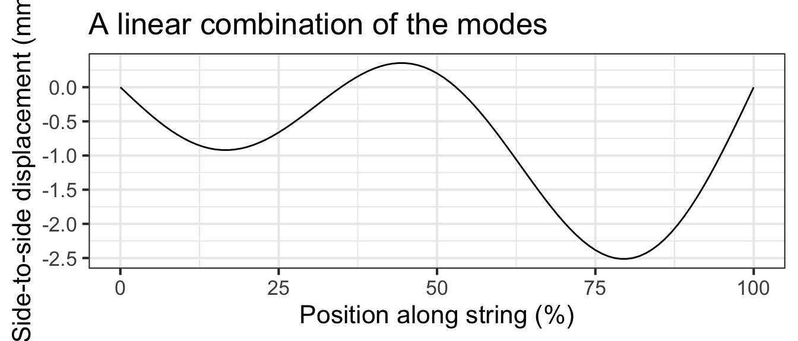
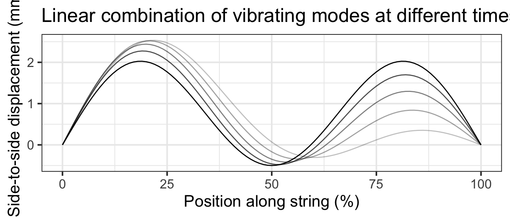

10 Functions with multiple inputs
We can use linear combination and function multiplication to build up custom functions from the basic modeling functions. Similarly, linear combination and function multiplication provide ways to construct functions of multiple inputs.
10.1 Linear combinations
Housing prices are determined by several (or many!) factors. Translating the previous sentence into the language of functions, we can say that the price is a function of multiple inputs. Plausible inputs to the function include the amount of living area and the number of bedrooms and bathrooms. The inputs may also include quality of the neighborhood, length of commute, and so on.
Often, the starting point for building a function with multiple inputs is a data frame whose variables include the function output (price) and the inputs to the function. Modelers often begin by constructing a function that is a linear combination of the input variables. To demonstrate what such functions look like, we can use the SaratogaHouses dataset, which records the sales price of 1728 houses in Saratoga County, New York, USA and 15 other variables for each house, such as livingArea and the number of bedrooms and bathrooms.
The techniques for constructing functions from data will be introduced in Block ?sec-vectors-linear-combinations. For now, let’s simply see what such functions look like. From SaratogaHouses we constructed this function:
[These are not made-up scalars in the linear combination. They have been derived from the SaratogaHouses data using a method called linear regression. The “linear” in the name refers to “linear combination.”]
\[\mathtt{price}(\mathtt{livingArea}, \mathtt{bedrooms}, \mathtt{bathrooms}) \equiv\\ 21000 + 105\, \mathtt{livingArea}\\ - 13000\,\mathtt{bedrooms} + 26000\, \mathtt{bathrooms}\]
The model function is a simple linear combination, but it effectively quantifies how different aspects of a house contribute to its sales price. The model (which is based on data from two decades ago) indicates that an additional square foot of living area is worth about 105 dollars per foot2. An extra bathroom is worth about $25,000. Bedrooms, strangely, are assigned a negative value by the model.
Possibly you already understand what is meant by “an additional square foot” or “an extra bathroom.” These ideas can be intuitive, but they can be best understood with a grounding in calculus, which we turn to in Block ?sec-differentiation-block. For instance, the negative scalar on bedrooms will make sense when you understand “partial derivatives,” the subject of Chapter Section 25.
10.2 f(x) times g(t)
When a guitar string is at rest it forms a straight line connecting its two fixed ends: one set by finger pressure along the neck of the guitar and the other at the bridge near the center of the guitar body. When a guitar string is plucked, its oscillations follow a sinusoid pattern of displacement. With the right camera and lighting setup, we can see these oscillations in action:
For a string of length \(L\), the string displacement is a function of position \(x\) along the string and is a linear combination of functions of the form \[g_k(x) \equiv \sin(k \pi x /L)\] where \(k\) is an integer. A few of these functions are graphed in ?fig-guitar-string-modes with \(k=1\), \(k=2\), and \(k=3\).


Shapes of the sort in ?fig-guitar-string-modes are a stop-motion flash snapshot of the string. The string’s shape also changes in time, so the string’s displacement is a function of both \(x\) and \(t\). The displacement itself is a sinusoid whose time period depends on the length and tension of the string as well as the number of cycles of the spatial sine: \[g_k(x, t) \equiv \sin(\frac{k \pi}{L} x) \ \sin(\frac{k \pi}{P}t)\] Figure @ref(fig:string-motion) shows a few snapshots of the 1.5 cycle string at different moments in time, and the motion of the linear combination.

We left function composition out of the list of ways to build multi-input functions out of simpler functions with a single input.
For instance, consider the two functions \(f(x)\) and \(g(t)\). The composition \(f(g(t))\) has only one input: \(t\). Similarly, \(g(f(x))\) has only one input: \(x\).
10.3 Constructing your own from data
Even if you don’t yet have a theoretical understanding of how to construct functions with multiple inputs from data, you can R/mosaic operations for doing so. A key function is fitModel(), which like makeFun(), constructs a function. And, like makeFun(), you need to use a tilde expression to specify the model formula. But, unlike makeFun(), you can leave it to the computer to find the parameters that will make the function align with data.
To illustrate, we can construct a housing-price model from the SaratogaHouses data:
price <- fitModel(price ~ A + B*livingArea + C*bedrooms + D*bathrooms,
data = SaratogaHouses)price() function to inputs, we are using the names of the inputs explicitly. To write the command price(2000,3,2) risks mixing up which input is which.Use the function in the ordinary way. For instance, here’s what the model has to say about the anticipated sales price of a house with 2000 square feet of living area, three bedrooms, and two bathrooms.
price(livingArea=2000, bedrooms=3, bathrooms=2)
## [1] 242448.1The units of the output are the same as the units of price in the SaratogaHouses data frame: dollars.
To look at a function, give the function name without parentheses, e.g. price. In contrast, you’ll always use parentheses when applying the function to inputs.
For technical reasons, the functions created by fitModel() have a lot of computer-programming jargon in them, as you can see by constructing the model itself and then looking at the function. But you will also see clearly the values of the parameters found by fitModel().